Einführung in die Verzeichnis-Favoriten
Eine Verzeichnis-Favoritenliste ist eine nutzbare Liste der Verzeichnisse, die Sie am häufigsten verwenden.
Sie erzeugt nichts auf dem Datenträger, sie ist einfach eine Liste von Verknüpfungen, um schnell auf die „heißen“ Verzeichnisse zuzugreifen.
Wenn Sie darüber zu einem Verzeichnis springen, müssen Sie nicht ständig wie ein Affe von einem Ast zum anderen im Baum hüpfen.
Auch für die wichtigen Verzeichnisse, die Sie nicht vergessen wollen, ist es gut, einen Bereich mit Verknüpfungen dorthin zu haben.
Selbst wenn Sie sie nicht oft öffnen, sparen Sie Zeit, wenn Sie sie brauchen, weil Sie nicht danach suchen müssen.
Double Commander erlaubt, ein Verzeichnis im lokalen Dateisystem, einen Netzwerkpfad oder ein WFX-Plugin anzugeben (als „wfx://PluginName“).
Vom Hauptpanel aus können Sie die Verzeichnis-Favoriten als Aufklappmenü sehen.
Klicken Sie auf einen der Einträge, und Sie gelangen sofort zum zugehörigen, festgelegten Verzeichnis.
Sie müssen nicht von Ordner zu Ordner wechseln, um dieses Ziel zu erreichen.
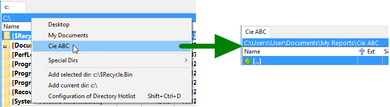
Im Folgenden die üblichen Aktionen im Zusammenhang mit der Favoritenliste
In der Menüleiste wählen Sie „Befehle“ und dann „Verzeichnis-Favoriten“.
Es erscheint als Aufklappmenü. Sie klicken den Eintrag an, und es bringt Sie zu dem Verzeichnis, das der von Ihnen festgelegte Eintrag definiert.
Sie können auf die Schaltfläche mit einem Stern oben rechts im aktiven Dateipanel klicken.
Sie können eine Schaltfläche in der Werkzeugleiste hinzufügen, die dem internen Befehl cm_DirHotList zugeordnet ist.
Sie können ein Tastenkürzel festlegen für den Befehl cm_DirHotList (standardmäßig Ctrl+D).
Sie können einen Doppelklick oder einen Klick mit der mittleren Maustaste auf der Leiste des aktuellen Verzeichnisses der aktiven Registerkarte verwenden.
In der Menüleiste können Sie „Konfiguration“ und dann „Verzeichnis-Favoriten“ wählen.
Der Baum, den Sie dort sehen, zeigt dasselbe wie die Verzeichnis-Favoriten als Aufklappmenü im Hauptpanel.
Statt es als Aufklappmenü zu sehen, sehen Sie es als Baum mit vielen Funktionen zum Bearbeiten, Verschieben usw., wie Sie in diesem Hilfedokument sehen können.
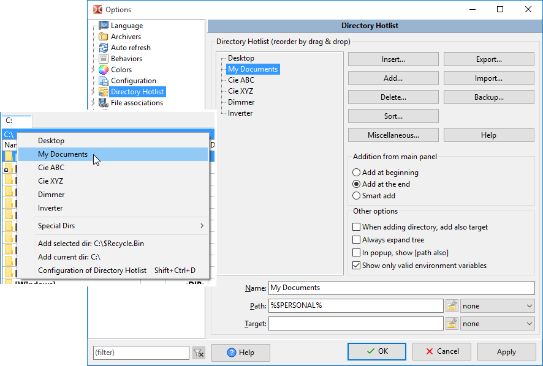
Am unteren Ende des Aufklappmenüs der Verzeichnis-Favoriten gibt es immer eine Menüverknüpfung, die Sie zum Konfigurationsfenster der Verzeichnis-Favoriten bringt.
Sie können eine Werkzeugschaltfläche mit dem internen Befehl cm_ConfigDirHotList hinzufügen.
Der einfachste Weg ist dieser:
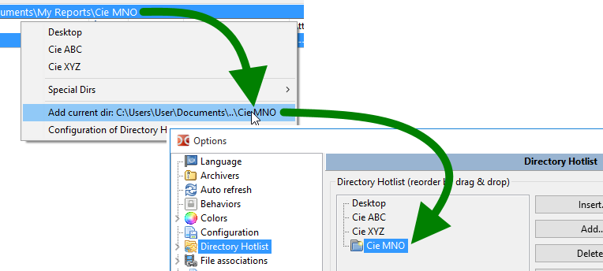
Später werden wir sehen, dass es noch viele weitere Möglichkeiten gibt, einen Eintrag zu den Verzeichnis-Favoriten hinzuzufügen.
Standardmäßig ist beim Hinzufügen eines Verzeichnisses zu den Verzeichnis-Favoriten der Eintragsname der Name des letzten Verzeichnisses.
Wenn Sie wollen, können Sie ihn umbenennen. Wählen Sie einfach das Feld „Name“ und geben Sie einen leicht zu merkenden Bezugsnamen ein.
In diesem Beispiel heißt der Ordner „doc“, der dem Eintrag gegebene Name aber „Documentation“.
So sehen Sie ihn auch im Aufklappmenü der Verzeichnis-Favoriten.
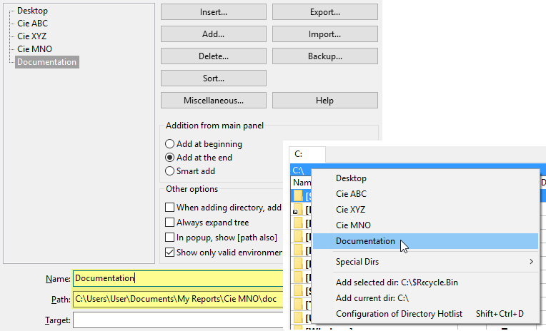
Das Und-Zeichen „&“ in einem Namen hat eine besondere Bedeutung. Wir können es verwenden, um ein Verzeichnis im Menü schnell mit der Tastatur auszuwählen: Wir setzen einfach ein Und-Zeichen vor einen der Buchstaben. Um dieses Zeichen unverändert zu verwenden, müssen wir es verdoppeln („&&“).
Sie können nicht nur das Verzeichnis hinzufügen, zu dem gewechselt wird, sondern auch das „Zielverzeichnis“ wählen, das sich im inaktiven Panel des Hauptfensters befindet.
Bei häufig wiederkehrenden Aktionen, wenn Sie etwas aus Verzeichnis „A“ nach Verzeichnis „B“ kopieren müssen, wählen Sie den Eintrag einfach im Menü der Verzeichnis-Favoriten, ganz gleich, in welchem Ordner Sie vorher waren. Beide Seiten werden auf die festgelegten Verzeichnisse gesetzt und sind bereit für die Aktion.
Um das Zielverzeichnis festzulegen, das beim Auswählen des Eintrags der Verzeichnis-Favoriten verwendet wird, setzen Sie einfach das Feld „Ziel“.
Das folgende Beispiel zeigt „Verzeichnis A“ mit „Verzeichnis B“ als Ziel, wie hier vorgeschlagen.
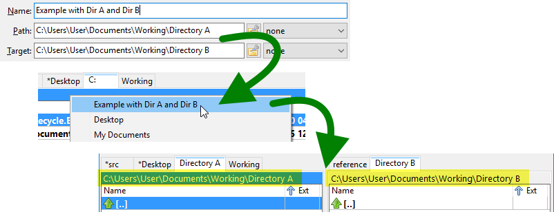
Am Ende der Felder „Pfad“ und „Ziel“ eines Eintrags gibt es ein Aufklappfeld.
Verwenden Sie dieses Aufklappfeld, wenn Sie vorgeben wollen, welche Sortierreihenfolge das Panel beim Auswählen des Eintrags der Verzeichnis-Favoriten haben soll.
Wenn Sie es auf „Datum 9-0“ setzen, verschiebt die Verwendung der Verzeichnis-Favoriten nicht nur den aktiven Pfad auf den festgelegten, sondern sortiert das Panel unabhängig von der vorherigen Sortierung in umgekehrter chronologischer Reihenfolge.
Lassen Sie dieses Feld auf „keine“, wenn die Auswahl eines neuen Pfads aus den Verzeichnis-Favoriten nichts ändern soll.
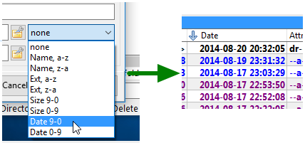
Sie können durchaus mit einem absoluten Pfad arbeiten, und auf DIESEM Rechner funktioniert das einwandfrei.
Nehmen wir aber an, Sie haben Double Commander zusammen mit zahlreichen anderen Werkzeugen auf Ihrem Schweizer-Messer-USB-Stick.
Dann wollen Sie vielleicht relative Pfade für portable Installationen.
Ich meine hier zum Beispiel relativ zum Pfad von Double Commander.
Sie können also diesen Pfad „E:\PortableApps\Notepad++Portable\Data\Config\“ haben, und er funktioniert.
Sie können ihn aber auch relativ zum aktuellen Pfad von „Double Commander“ machen und „%commander_path%\..\..\Notepad++Portable\Data\Config\“ verwenden.
Damit Sie herausfinden, was Sie eingeben müssen (mit anderen Worten, wie viele „..\“ Sie verwenden!), gibt es rechts neben den Feldern „Pfad“ und „Ziel“ eine kleine Schaltfläche  , die ein Aufklappmenü mit verschiedenen kleinen Werkzeugen öffnet, um den Pfad so zu bearbeiten und anzuordnen, wie Sie es wünschen.
, die ein Aufklappmenü mit verschiedenen kleinen Werkzeugen öffnet, um den Pfad so zu bearbeiten und anzuordnen, wie Sie es wünschen.
Das ist aber nur eine der möglichen Verwendungen dieser Schaltfläche.
Hier eine vollständige Übersicht dessen, was Sie dort finden:
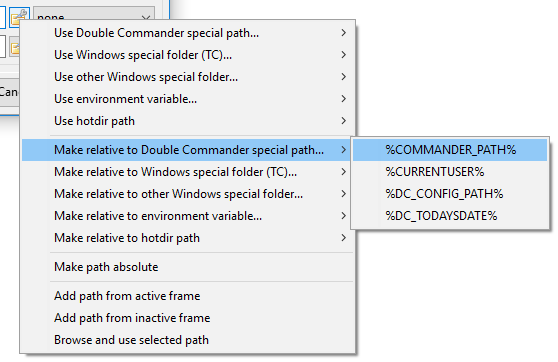
Mit der Zeit kann die Liste der Verzeichnis-Favoriten länger und ungeordnet werden.
Sie können die Reihenfolge einfach ändern, indem Sie den ausgewählten Eintrag an eine neue Position ziehen, die für Sie sinnvoller ist.
Mit der Taste Ctrl auf der Tastatur können Sie auch mehr als einen Eintrag auf einmal auswählen und verschieben.
Wenn Sie eine sehr lange Verzeichnisliste haben, eignet sich Ziehen und Ablegen vielleicht nicht, weil Quelle und Ziel zu weit auseinanderliegen.
Wählen Sie dann die Einträge, die Sie verschieben wollen, klicken Sie auf die Schaltfläche „Verschiedenes“, um das Aufklappmenü aufzurufen, und wählen Sie „Auswahl der Einträge ausschneiden“.
Dann blättern Sie in der Liste zur Zielposition, an der Sie die ausgewählten Einträge ablegen wollen.
Dann klicken Sie erneut auf die Schaltfläche „Verschiedenes“ und wählen „Ausgeschnittenes einfügen“, um die zuvor ausgewählten Einträge einzufügen.
Mit der Taste Ctrl können Sie mehr als einen Eintrag auf einmal zum Ausschneiden und Einfügen auswählen.
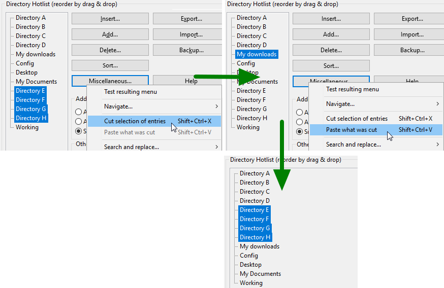
Wenn Sie ein Freund der Verzeichnis-Favoriten sind, wie der Verfasser dieser Zeilen, reicht eine eindimensionale Liste der Verzeichnis-Favoriten nicht aus!
Hier hilft Double Commander. Sie können Untermenüs in Ihren Verzeichnis-Favoriten anlegen und organisieren.
Darüber hinaus können Sie Untermenüs innerhalb anderer Untermenüs haben.
Das heißt, Sie können sich wirklich gut organisierte Verzeichnis-Favoriten einrichten.
Um ein Untermenü hinzuzufügen, verwenden Sie die Schaltfläche „Einfügen“ (an der aktuellen Position hinzufügen) oder „Hinzufügen“ (darunter hinzufügen). Sie können auch Tastenkürzel verwenden.
Es wird ein Untermenü mit dem Namen „Name des Untermenüs“ erstellt, das einen Eintrag mit dem Namen „Name des Favoritenverzeichnisses“ enthält.
Mit den Feldern darunter können Sie dem Untermenü selbstverständlich einen aussagekräftigen Namen geben.
Von dort aus können Sie einen neuen Eintrag hinzufügen, andere Einträge in dieses neue Untermenü verschieben usw.
Beachten Sie, dass Sie ein Untermenü verschieben oder ausschneiden und einfügen können. Das erleichtert das Umordnen Ihrer Verzeichnis-Favoriten.
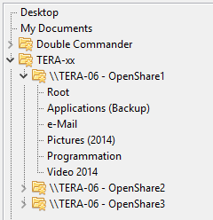
Viele Einträge hintereinander sind praktisch, aber Trennlinien zum Bilden von Kategorien können Ordnung in Ihre Liste bringen.
Um eine Trennlinie hinzuzufügen, verwenden Sie die Schaltfläche „Einfügen“ (an der aktuellen Position hinzufügen) oder „Hinzufügen“ (darunter hinzufügen). Sie können auch Tastenkürzel verwenden.
Im Konfigurationsbaum der Verzeichnis-Favoriten sehen Sie eine Zeile mit Punkten. Im Hauptpanel im Aufklappmenü der Verzeichnis-Favoriten sehen Sie eine saubere Menütrennlinie.
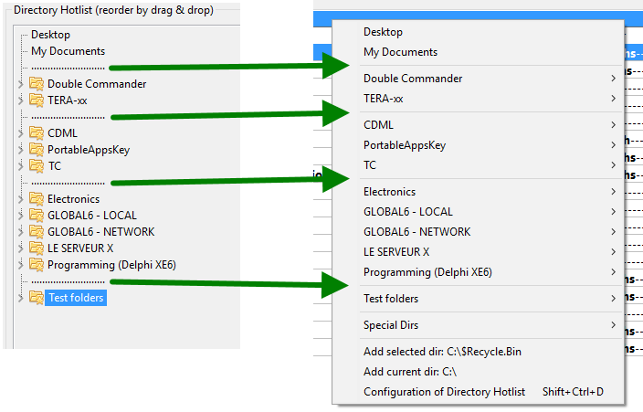
Wie oben beschrieben können Sie die Einträge der Verzeichnis-Favoriten mit Ziehen und Ablegen sowie mit Ausschneiden und Einfügen sicher so anordnen, wie Sie es wünschen.
Wenn Sie aber mit alphabetischen Namen arbeiten wollen, können Sie die eingebauten Sortierfunktionen verwenden.
Die Idee der Sortierung ist einfach: Setzen Sie die aktuelle Auswahl dorthin, wo Sie sortieren wollen, und wählen Sie dann die gewünschte Sortierfunktion, indem Sie die Schaltfläche „Sortieren...“ drücken, die ein Aufklappmenü öffnet.
Die fünf verfügbaren Möglichkeiten geben Ihnen alle Freiheit, die Sie in dieser Sache wünschen:
Wie zuvor beschrieben verschiebt keine Sortierung einen Eintrag über eine Trennlinie hinweg.
Damit Sie sehen, was es bedeutet, beim Sortieren eine Trennlinie nicht zu überschreiten, sehen Sie das folgende Beispiel.
Der Ordner „Root“ bleibt nach der Sortierung immer über den anderen, *weil* dort eine Trennlinie ist.
Die Trennlinien sind dafür wirklich nützlich.
Sie machen die Sache nicht nur übersichtlicher, sie sind auch als Begrenzer beim Sortieren nützlich!
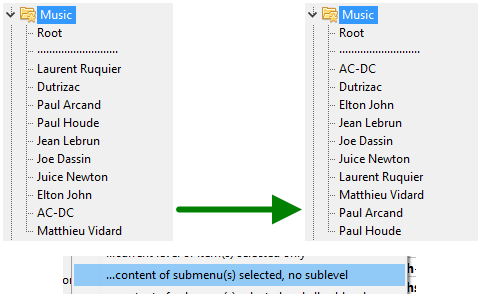
Im Folgenden seltenere Aktionen zu den Verzeichnis-Favoriten, die aber trotzdem nützlich zu kennen sind.
Wenn Ihre Verzeichnis-Favoriten an Zahl der Verzeichnisverknüpfungen wachsen, wollen Sie sie vielleicht „für den Fall der Fälle“ sichern, damit bei einem Unfall diese wertvollen Verknüpfungen nicht verloren gehen.
Dazu gibt es rechts im Konfigurationsfenster eine Schaltfläche namens „Sichern“. Drücken Sie sie und wählen Sie im Menü „Eine Sicherung der aktuellen Verzeichnis-Favoriten speichern“.
Dann wird die aktuelle Liste in eine Datei in einem Ordner „Backup“ gespeichert, der im festgelegten Konfigurationsverzeichnis von Double Commander liegt. Der Dateiname enthält das aktuelle Datum und die aktuelle Uhrzeit. Beachten Sie auch die Dateierweiterung „.hotlist“.
Zum Wiederherstellen wählen Sie „Eine Sicherung der Verzeichnis-Favoriten wiederherstellen“ im selben Menü. Wählen Sie in der Dateiauswahl, die erscheint, die Sicherung, die Sie wiederherstellen wollen.
Wenn Sie eine Sicherung wiederherstellen, wird zuerst die aktuelle Verzeichnis-Favoritenliste gelöscht und dann die Einträge aus der Sicherungsdatei hinzugefügt.
Wenn Sie nur bestimmte Einträge aus der Sicherungsdatei wiederherstellen wollen, können Sie „Importieren“ wählen und die Sicherungsdatei angeben. Double Commander fordert Sie dann auf anzugeben, welche Einträge aus der Sicherungsdatei Sie wiederherstellen wollen.
Wenn Sie mehr als einen Computer haben oder wenn jemand dieselben Server nutzt wie Sie, wollen Sie Ihre Verzeichnis-Favoriten oder einen Teil davon vielleicht exportieren, damit Sie auf dem anderen Computer dieselben Verzeichnisverknüpfungen haben, ohne sie einzeln eingeben zu müssen.
Klicken Sie dazu zuerst auf die Schaltfläche „Exportieren“ und wählen Sie dann „...in eine Verzeichnis-Favoriten-Datei (.hotlist)“.
Sie werden dann aufgefordert, den Dateinamen und den Speicherort der Exportdatei einzugeben, die Sie erstellen wollen.
Dann werden Sie gefragt, was Sie exportieren wollen.
Sie können den gesamten Baum exportieren oder die Einträge einzeln auswählen.
Sie können auch ein ganzes Untermenü auswählen, indem Sie den Namen des Untermenüs wählen, ohne die Einträge darin auswählen zu müssen.
Halten Sie beim Klicken die Taste Ctrl auf der Tastatur gedrückt, um die verschiedenen Einträge auszuwählen, die Sie exportieren wollen.
Auf dem anderen Computer klicken Sie dann auf die Schaltfläche „Importieren“ und wählen den Menüeintrag „aus einer Verzeichnis-Favoriten-Datei (.hotlist)“.
Geben Sie in der Dateiauswahl die zu importierende Datei an.
Ähnlich wie beim Export können Sie alles importieren, es wird Ihnen aber auch angeboten, bestimmte Einträge auszuwählen, die Sie importieren wollen.
Die Einträge, die Sie importieren, werden am Ende Ihrer eigenen angefügt.
Double Commander kann Verzeichnis-Favoriten auch nach und von denen von Total Commander exportieren und importieren.
Nehmen wir an, Sie wollen einige Einträge aus Total Commander importieren. Gehen Sie so vor.
Klicken Sie im Konfigurationsfenster der Verzeichnis-Favoriten auf die Schaltfläche „Importieren...“ und wählen Sie „...aus der „wincmd.ini“ von TC“.
Wählen Sie dann in der Dateiauswahl den Speicherort der Datei „wincmd.ini“ Ihres Total Commander.
Wenn Sie nicht wissen, wo diese Datei liegt, klicken Sie in Total Commander auf das Menü „Hilfe“ und dann auf „Über Total Commander...“.
Dort steht der Speicherort der INI-Datei.
Dann erscheint ein Baum mit den Verzeichniseinträgen, die aus der INI-Datei von Total Commander gelesen wurden.
Aus diesem Baum können Sie ALLE Einträge importieren oder sie einzeln auswählen, ganz wie Sie wollen.
Halten Sie beim Klicken die Taste Ctrl auf der Tastatur gedrückt, um die verschiedenen Einträge auszuwählen, die Sie importieren wollen.
Die Einträge, die Sie importieren, werden am Ende Ihrer eigenen angefügt.
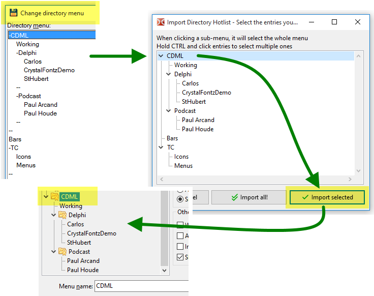
Umgekehrt können Sie alle oder einen Teil Ihrer Verzeichnis-Favoriten von Double Commander in die von Total Commander exportieren.
Klicken Sie dazu auf die Schaltfläche „Exportieren...“ und wählen Sie eine der beiden möglichen Exportarten nach Total Commander.
Wenn Sie wissen, was Sie tun, und akzeptieren, alle Einträge der Verzeichnis-Favoriten von Total Commander zu ersetzen, können Sie „in eine „wincmd.ini“ von TC (Vorhandenes löschen)“ wählen.
Auch hier können Sie wählen, ob Sie alles exportieren oder nur die gewünschten Einträge auswählen.
Halten Sie beim Klicken die Taste Ctrl auf der Tastatur gedrückt, um die verschiedenen Einträge auszuwählen, die Sie exportieren wollen.
Vielleicht sollten Sie Total Commander dabei geschlossen halten, ihn danach wieder öffnen und nachsehen, was Sie erhalten haben.
Total Commander bietet Ihnen nicht so einfache Möglichkeiten, die Einträge der Verzeichnis-Favoriten zu gliedern und zu sortieren, wie Double Commander es tut.
Sie können also die Verzeichnis-Favoriten von Total Commander nach Double Commander importieren, sie dann umordnen, sortieren, gliedern usw. und anschließend zurück nach Total Commander exportieren!
*Hinweis: Es wurden Aufwand und Tests betrieben, damit die Anwendung die INI-Konfigurationsdatei von Total Commander nicht beschädigt.
Eine Sicherung dieser Datei vor dem Export einiger Einträge dorthin ist aber sicher eine gute Praxis und wird empfohlen.
Sie tun dies selbstverständlich auf eigenes Risiko!
...ein Risiko, ein nettes Programm wie Double Commander zu entdecken!
Mit der Zeit kann es vorkommen, dass Ihre Verzeichnis-Favoriten Einträge enthalten, die auf Verzeichnisse zeigen, die es nicht mehr gibt.
Um diese Einträge zu finden, klicken Sie im Konfigurationsfenster der Verzeichnis-Favoriten auf die Schaltfläche „Verschiedenes“.
Wählen Sie dann „Alle Pfade der Favoritenverzeichnisse prüfen, um die tatsächlich vorhandenen zu bestätigen“.
Dadurch lässt die Anwendung alle Verzeichnisse durchsuchen, auf die Ihre Verknüpfungen zeigen.
Fehlt eines, wird links neben dem Eintrag ein Symbol für „fehlend“ angezeigt.
Ein Untermenüzweig mit mindestens einem fehlenden Eintrag zeigt ebenfalls ein besonderes Symbol, das auf einen fehlenden Eintrag hinweist.
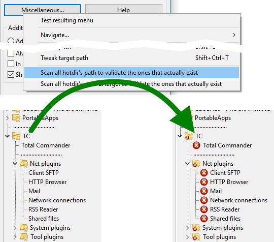
Von dort aus können Sie die Einträge entweder löschen, weil das Verzeichnis, auf das sie zeigen, nicht mehr existiert, oder sie behalten.
Warum behalten? Ganz einfach. Wenn Double Commander auf einem USB-Stick von einem Computer zum anderen verwendet wird, kann es völlig normal sein, dass Verzeichnisse auf einem Computer fehlen, die auf dem vorherigen vorhanden waren.
Wie hilft Ihnen dann die Funktion „Alle Pfade der Favoritenverzeichnisse prüfen, um die tatsächlich vorhandenen zu bestätigen“?
Weil dadurch diese Einträge auch aus dem Aufklappmenü der Verzeichnis-Favoriten im Hauptpanel entfernt werden.
Diese Einträge, die auf nicht vorhandene Ordner verweisen, werden nicht angezeigt!
Sie werden nicht dauerhaft aus der internen Liste der Verzeichnis-Favoriten gelöscht.
Sie werden für die Sitzung einfach nicht im Aufklappmenü angezeigt.
Sehen Sie das Ergebnis des vorherigen Beispiels.
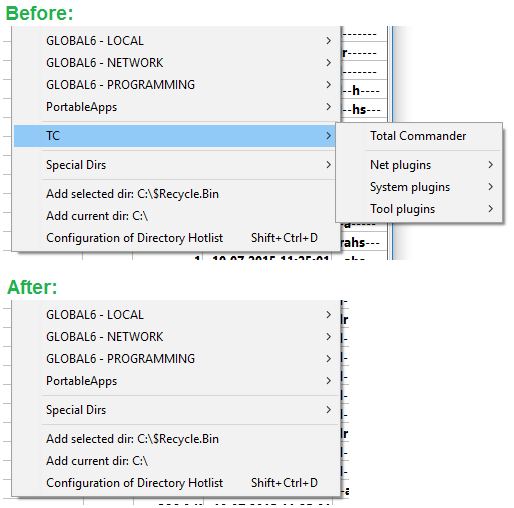
Wenn Sie Ihre Verzeichnis-Favoriten für eine neue Situation einrichten, möchten Sie vielleicht viele Verzeichnisse auf einmal zu den Verzeichnis-Favoriten hinzufügen.
Dafür gibt es zwei Wege.
Erste Methode: direkt aus dem Hauptrahmen mit der Auswahl
Das ist einfach: Sie wählen die Verzeichnisse aus, die Sie hinzufügen wollen, rufen das Aufklappmenü der Verzeichnis-Favoriten auf und wählen am Ende „x ausgewählte Verzeichnisse hinzufügen“.
Die Verzeichnisse werden an der konfigurierten Einfügeposition hinzugefügt.
Wenn Sie das Hinzufügen über die Methode „intelligent“ konfiguriert haben, sieht man gut, wie passend sie platziert werden!
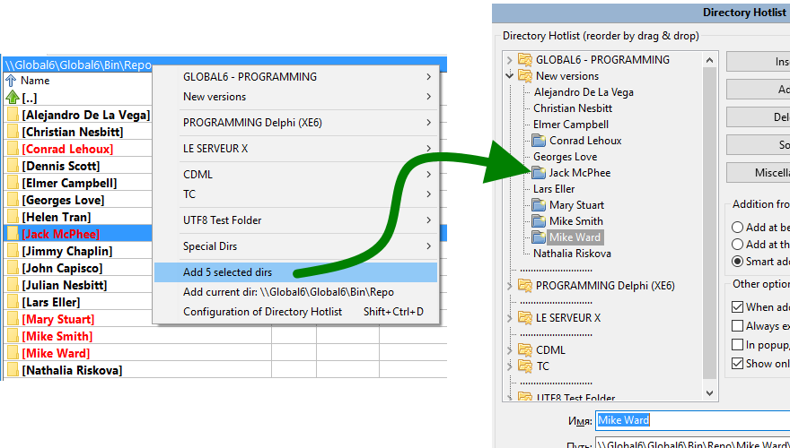
Zweite Methode: ähnlich wie die erste, aber mit gleichzeitig sichtbarem Konfigurationsfenster der Verzeichnis-Favoriten und Hauptpanel
Auch das ist einfach: Sie öffnen zuerst das Konfigurationsfenster der Verzeichnis-Favoriten.
Dann setzen Sie die Auswahl dorthin, wo die neuen Verzeichnisse hinzugefügt werden sollen.
Dann drücken Sie die Schaltfläche „Einfügen“ (an der aktuellen Position hinzufügen) oder „Hinzufügen“ (darunter hinzufügen) und klicken auf „Aktuell ausgewählte oder aktive Verzeichnisse des aktiven Rahmens“.
Sie sehen sie hinzugefügt oder eingefügt und bereit, nach Ihren Wünschen sortiert, umbenannt und angeordnet zu werden.
Das ist fast eine versteckte Funktion.
Wie in Punkt 2.7 dieser Seite beschrieben, haben Sie den Eintrag der Verzeichnis-Favoriten vielleicht so konfiguriert, dass auch das Verzeichnis des inaktiven Rahmens zu einem angegebenen Zielverzeichnis wechselt.
Manchmal ist es aber wünschenswert, dass der Zielordner nicht wechselt, sondern nur der aktive Hauptrahmen.
Das können Sie mit einem kleinen Trick vermeiden: Halten Sie die Taste Ctrl auf der Tastatur gedrückt, wenn Sie die Verknüpfung im Aufklappmenü der Verzeichnis-Favoriten anklicken.
Wenn die Taste Ctrl im Moment des Klicks auf die Verknüpfung gehalten wird, wechselt nur der aktive Rahmen, das Ziel nicht.
Auch das ist fast eine versteckte Funktion.
Wenn Sie im Aufklappmenü der Verzeichnis-Favoriten blättern, kommt es vor, dass Sie einen Tippfehler sehen, den Sie korrigieren wollen, oder etwas, das nicht so geordnet ist, wie Sie es wünschen.
Sie können dann weiter unten klicken, um in die Konfiguration zu gelangen, im Baum suchen, wo der Eintrag war, und dann Ihre Korrektur vornehmen.
Es gibt aber einen kleinen Trick, um es besser, schneller und einfacher zu machen.
Halten Sie im Aufklappmenü der Verzeichnis-Favoriten die Taste Shift auf der Tastatur gedrückt, wenn Sie den Menüeintrag anklicken, zu dem Sie direkt im Konfigurationsfenster gelangen wollen, um ihn nach Ihrem Geschmack einzurichten.
Wenn die Taste Shift im Moment des Klicks auf die Verknüpfung gehalten wird, bringt DC Sie zum Konfigurationsfenster, und die Auswahl ist bereit, nach Ihrem Wunsch bearbeitet zu werden.
Sie müssen nicht in der Liste danach suchen!
Im Konfigurationsfenster der Verzeichnis-Favoriten gibt es ein Kontrollkästchen namens „Im Aufklappmenü auch [Pfad] anzeigen“.
Wenn diese Option aktiviert ist, weist sie Double Commander an, direkt im Eintrag des Aufklappmenüs den vollständigen Pfad anzuzeigen, auf den die Verknüpfung zeigt.
Sie sehen also nicht nur den Namen des Favoritenverzeichnisses, den Sie vergeben haben, sondern auch den vollständigen Pfad, zu dem gewechselt wird, wenn Sie klicken.
Das kann stören, weil es viel Text auf dem Bildschirm hinzufügt und wir es irgendwann leid sein können, das zu sehen.
In manchen Situationen aber, besonders bei den speziellen Verzeichnissen zu den von Windows definierten Ordnern und auch bei den Umgebungsvariablen, die auf Verzeichnisse zeigen.
Es ist praktisch, direkt zu sehen, wohin jeder Eintrag zeigt.
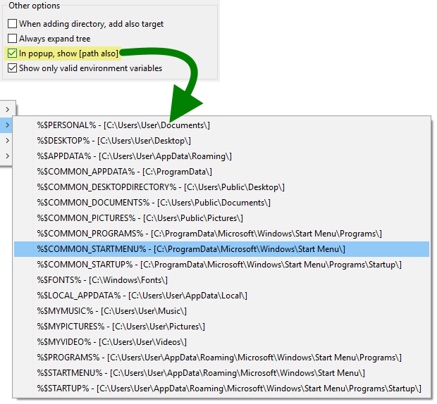
Im Abschnitt „Spezielle Verzeichnisse“ des Aufklappmenüs der Verzeichnis-Favoriten sehen Sie, dass Sie Umgebungsvariablen haben können.
Nicht unbedingt ALLE Variablen sind tatsächlich ein Verzeichnis.
In der Konfiguration der Verzeichnis-Favoriten können Sie die Option „Nur gültige %env_var% anzeigen“ aktivieren.
Wenn diese Option aktiviert ist, versucht DC, aus dem Menü die Umgebungsvariablen zu entfernen, die nicht wie ein gültiger Pfad aussehen, zumindest am Anfang.
Es wird nicht unbedingt suchen und prüfen, ob der Pfad tatsächlich vorhanden ist, um nicht ohne wirklichen Bedarf zu verlangsamen, sondern die offensichtlich unpassenden schnell aussortieren.
Es gibt vielleicht noch einige weitere kleine Möglichkeiten und Funktionen der Verzeichnis-Favoriten von Double Commander, die in der Anwendung vorhanden und hier nicht beschrieben sind.
Es ist schwer (und manchmal lästig, auch wenn es nötig bleibt), eine Hilfedatei wie diese auf dem neuesten Stand zu halten.
Sie werden das meiste aber sicher herausfinden, und dieser Hilfeabschnitt deckt zumindest die wichtigsten Punkte des Themas ab.